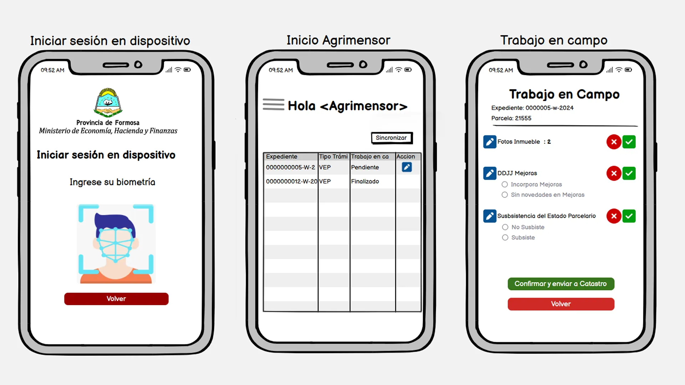
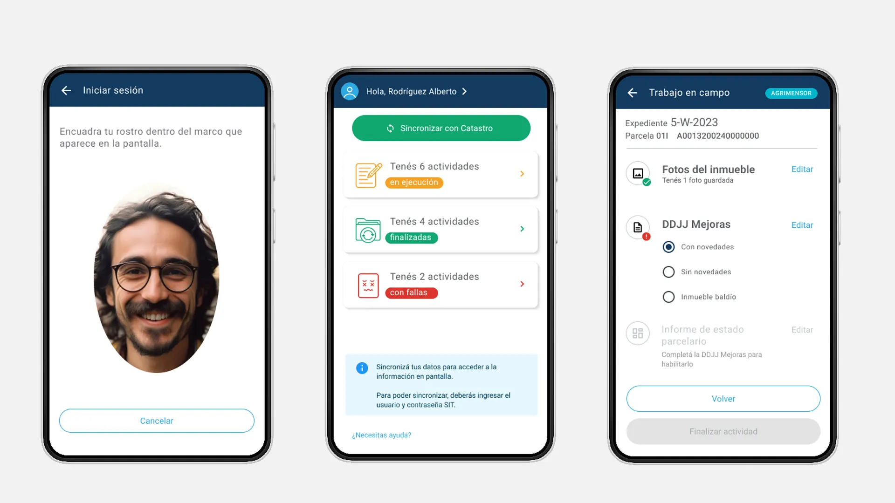
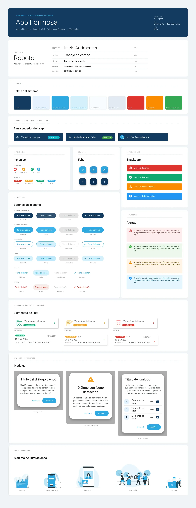

App SIT en campo Formosa
El proyecto
Trabajé para modernizar el proceso de relevamiento catastral de la Provincia de Formosa. El sistema existente era de escritorio y obligaba a los agrimensores a volver a la oficina para cargar datos levantados en campo. La nueva versión tenía que funcionar desde el celular del agrimensor y del inspector municipal, operar sin conexión y sincronizar cuando hubiera red. Construí el design system en Figma siguiendo Material Design 3, con componentes, tokens y estados documentados.


Ver caso completo Ver menos
El desafío
La app debía servir a dos perfiles de usuario, con necesidades distintas, que operaban sobre el mismo sistema de datos catastral: agrimensores que trabajan en campo bajo el sol y con guantes, e inspectores municipales que operan desde oficina. Los puntos críticos: la autenticación en condiciones de campo, no perder datos si se corta la red, y un proceso de registro de dispositivo que requiere presencia física (y que el usuario no sabe que va a necesitar hasta que ya está ahí).


Proceso
Con el equipo técnico de Igeo Consultora tuvimos reuniones semanales durante cuatro meses. El cliente llegó con wireframes de baja fidelidad en Balsamiq que documentaban los flujos base; traduje esa lógica funcional al lenguaje de diseño: jerarquía de información, estados de error, flujos de edge case y consistencia visual.



Decisiones de diseño
Biometría facial en lugar de huella dactilar
Los agrimensores trabajan con las manos en condiciones que inutilizan el sensor de huella. El reconocimiento facial es más confiable en campo. Requirió diseñar una pantalla de captura con instrucciones claras de distancia y luz.
Resultado · Autenticación funcional en condiciones de campo sin necesidad de quitarse los guantes.
Flujo de campo como checklist progresivo
En lugar de un formulario único, el flujo se organizó en tres secciones con estado visible: fotos del inmueble, DDJJ Mejoras, Informe de estado parcelario. Cada sección muestra si está completa, pendiente o con error. El botón "Finalizar actividad" permanece deshabilitado hasta completar las secciones obligatorias.
Resultado · Cero actividades enviadas con datos incompletos: el botón no habilita hasta completar las secciones obligatorias.
Sistema de errores en tres niveles
Modales para errores bloqueantes que requieren decisión, banners informativos para avisos de contexto, y estados inline para errores de campo. Esto redujo las interrupciones en los flujos principales.
Resultado · Menos interrupciones en los flujos críticos de campo: solo los errores bloqueantes detienen al usuario.
Diferenciación visual por rol
Agrimensor y Municipal comparten la misma base de componentes, diferenciados con un badge de rol en el header (cyan para agrimensor, verde para municipal), visible en todas las pantallas de sesión activa.
Resultado · Diferenciación de rol visible en todo momento, sin riesgo de confusión entre perfiles.


El resultado
126 pantallas de alta fidelidad.
Flujos completos para ambos roles, los estados de error del sistema catastral, y el proceso de
registro, activación y desregistro de dispositivo.
El prototipo fue usado directamente como referencia de desarrollo por el equipo técnico de Igeo
Consultora, sin iteraciones adicionales de especificación. Hoy está implementado en
el
sistema catastral de la provincia de Formosa.
Lo que aprendí
Diseñar para trabajo de campo impone restricciones que el diseño de escritorio ignora: guantes, sol, conexión intermitente, presión de tiempo. Cada decisión de interacción (tamaño de toque, número de pasos, claridad del estado) tiene consecuencias reales cuando el usuario está parado en el medio de un lote en Formosa a 40 grados. Ese contexto físico fue el criterio de validación de cada pantalla.